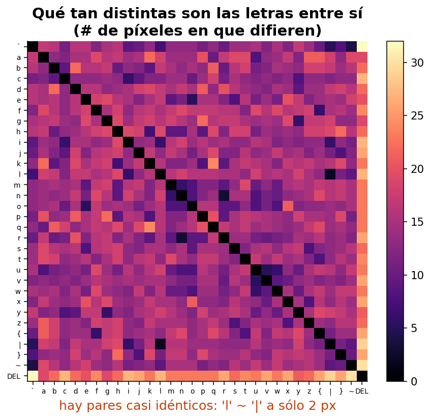
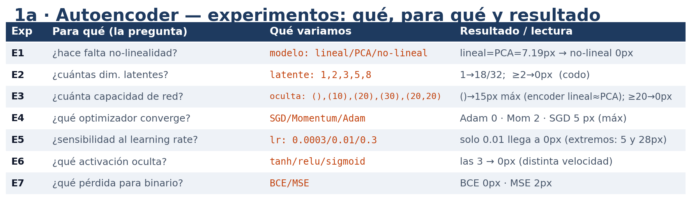
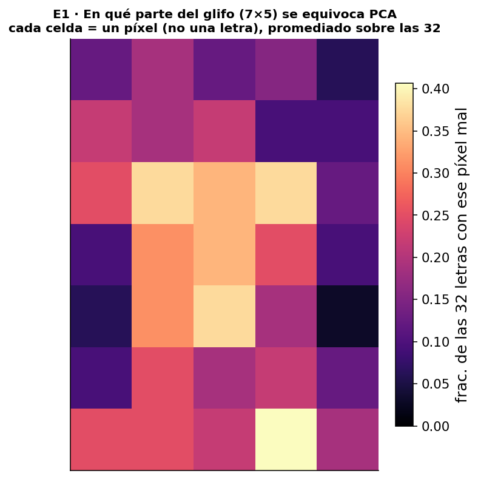
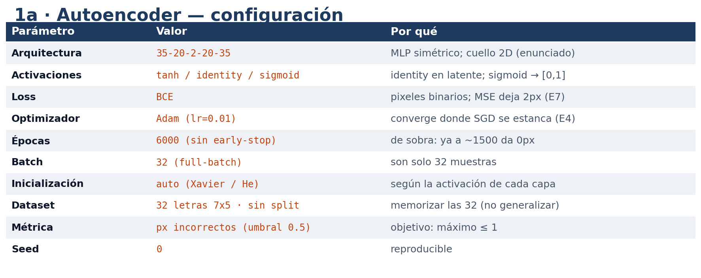
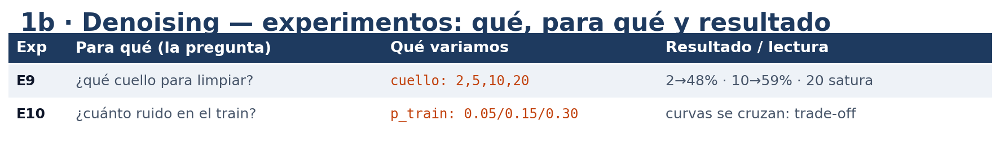
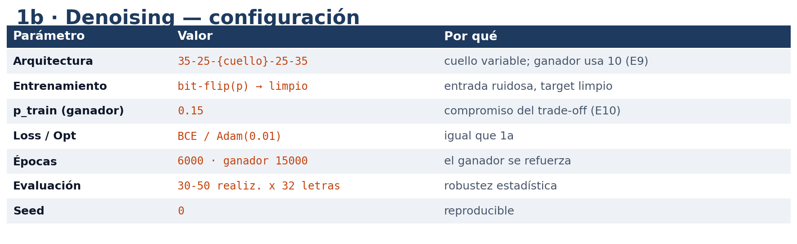
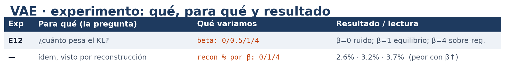
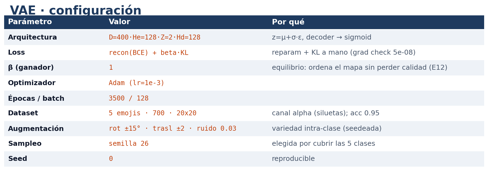
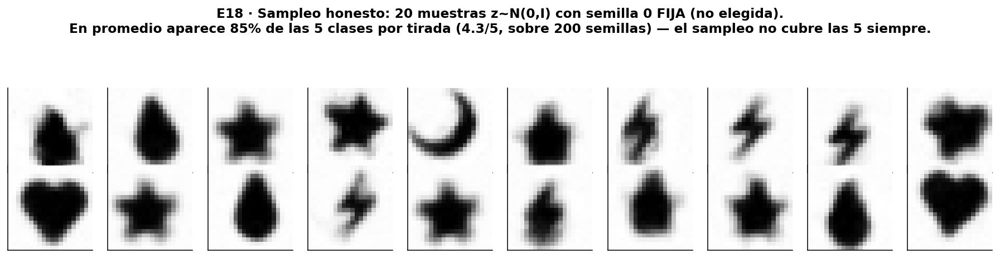

Autoencoders
TP5 — Deep Learning
Sistemas de Inteligencia Artificial · ITBA · 1Q 2026
Nicolás Valentín Arias · Tomás Pinausig · Mateo Pirola · Katia Menshikoff
¿Qué es un autoencoder?
Una red que copia la entrada en la salida, pero obligada a pasar por un cuello angosto.
- Como por el cuello no entra todo, la red tiene que resumir la imagen.
- 1a: ¿se puede resumir muchísimo? · 1b: ¿sirve para limpiar manchas? · 2: ¿se puede inventar?
El dataset: 32 letras


- 32 letras de 7×5, a guardar con solo 2 números. Difícil: hay pares casi idénticos (l y | a 2 px) que igual hay que separar.
Todo lo que probamos

- Cada fila: un experimento, para qué lo hicimos y qué dio.
¿Hacen falta las curvas?


- Modelo recto (PCA): 7 píxeles de error, concentrados en el centro del glifo. Con curvas: 0.
¿Cuántos números por letra?

- Con 1 no alcanza; con 2 ya salen perfectas.
¿Qué tan grande la red?

- Red muy chica falla; con 20 neuronas ya sale perfecto.
¿Cómo entrenar?

- Adam es el que llega más abajo; los otros se quedan a mitad de camino.
¿Qué tan grande el paso?

- Paso muy chico tarda; muy grande se atasca alto (~28px); el del medio anda.
¿Qué tipo de neurona?

- Las tres terminan perfectas; solo cambia qué tan rápido llegan.
¿Cómo medir el error?

- Una forma (BCE) queda perfecta para blanco y negro; la otra deja 2 errores.
Juntando lo mejor

- Combinando lo mejor de cada experimento, esta es la receta del ganador.
Reconstrucción: sin errores

- Arriba la letra real, abajo la de la red: 0 px de error · 32 de 32 letras perfectas.
El mapa de 2 números

- Las 32 letras ubicadas en el mapa; el recuadro de la derecha es un zoom del centro.
El mapa, ¿respeta las similitudes?

- El AE distingue las 32 letras a la perfección (tiene que, para reconstruir a 0 px).
- El parecido, en cambio, lo conserva solo a medias (ρ = 0.57): las parecidas tienden a quedar cerca, pero los casi idénticos (l y |) los separa a propósito para poder distinguirlos.
Inventar letras nuevas

- Recorriendo el mapa aparecen letras que no estaban.
De la 'a' a la 'o'

- Caminamos en el mapa de la 'a' a la 'o': los pasos del medio son mezclas continuas.
Limpiar ruido
Le damos la imagen sucia y le pedimos la limpia.
- Misma idea de antes, pero la red aprende a sacar las manchas.
Todo lo que probamos

- Los dos experimentos, para qué y qué dieron.
¿Por qué un cuello más ancho?

- Cuello 2 limpia mal; cuello 10 mucho mejor; más de 10 no suma.
¿Cuánto ruido al entrenar?

- Poco ruido: bien con poco, mal con mucho. Mucho: al revés. No hay un único mejor.
Juntando lo mejor

- La receta del limpiador: cuello 10 y el ruido de entrenamiento justo.
Resultado del limpiador

- Deja ≤1 px de error en el 81% de las letras a 15% de ruido (92% a 10%).
Limpio / sucio / recuperado

- Se ve la letra limpia, la sucia y la que recupera la red.
Generar imágenes nuevas
El nuevo modelo guarda una zona por imagen, no un punto.
- Eso es justo lo que después le permite inventar.
Datos nuevos: emojis

- Elegimos 5 emojis como siluetas claras (descartamos una versión de contornos que se confundía).
Todo lo que probamos

- Lo único que variamos es cuánto ordenamos el mapa (beta).
- Todo el VAE en numpy desde cero, con las cuentas de la red verificadas a mano, una por una.
El ingrediente que ordena el mapa

- Sin ese ingrediente sale mayormente ruido; con él salen emojis de verdad.
Por qué uno genera y el otro no

- Sin ordenar, los puntos quedan desparramados; ordenados, agrupados en el centro.
Juntando lo mejor

- La receta del VAE ganador: β=1, el equilibrio entre ordenar el mapa y la calidad de imagen.
El mapa de los emojis

- Cada tipo de emoji ocupa su zona, ordenadas en su zona alrededor del centro (no una sola nube: conserva 5 cúmulos).
Generar muestras nuevas

- Reconstruye y además genera muestras nuevas (no copias), reconocibles: variaciones continuas de los 5 prototipos.
Sampleo honesto del VAE (semilla al azar, sin elegir)

- Semilla 0 fija (no elegida); en promedio aparece ~85 % de las clases (4.3/5) por tirada sobre 200 semillas — el muestreo no siempre cubre las 5.
El mapa completo decodificado

- Los emojis se transforman de a poco uno en otro: genera mezclas continuas, no copia.
El equilibrio

- Más orden = mapa más prolijo pero imágenes un poco peores. Hay que equilibrar.
Conclusiones
- 1a: con curvas y 2 números guardamos las 32 letras perfecto; un método clásico no llega.
- 1b: limpiar ruido necesita un cuello más ancho, y el ruido de entrenamiento es un equilibrio.
- VAE: ordenando el mapa, el modelo pasa de resumir a generar muestras nuevas (no copias) reconocibles.